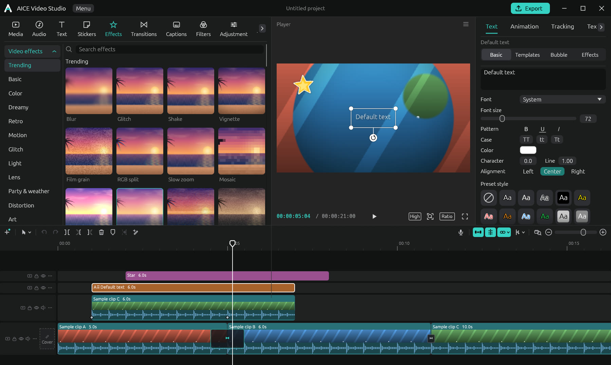

A familiar multi-track editor with captions, background removal, text to speech and 4K export — every tool runs offline, with no account and no watermark.
Download for Windows (64-bit)
Speech recognition, cutouts and voices run on your machine. No uploads, no sign-in.
A compact native program that opens fast and previews smoothly on everyday laptops.
Tracks, keyframes, speed curves, transitions and shortcuts that work the way you expect.
Up to 4K at 60 fps in H.264, H.265 or AV1, with presets for every major platform.